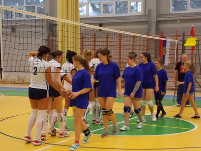
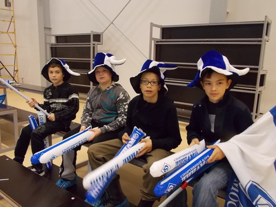
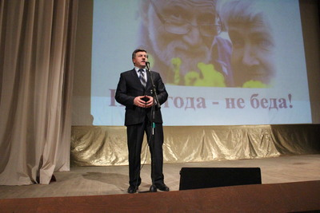
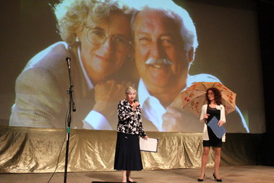
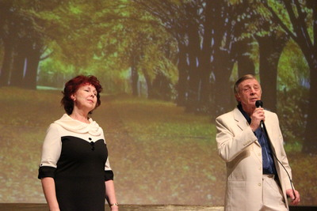
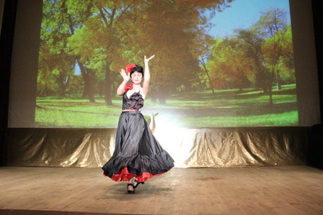

Соревнования по волейболу в спорткомплексе «Лидер»


28 октября 2012 года с спортивном комплексе «Лидер» состоялся 1 тур Чемпионата Калужской области по
волейболу в зачет областной летней Спартакиады 2012 года среди команд муниципальных образований.
Команды Тарусского, Ферзиковского, Сухиничского районов и города Балабаново находятся в подгруппе
«С».
Результаты 5 матчей, проведенных в минувшее воскресенье таковы:
| Женщины |
| Ферзиково |
0:3 |
Балабаново |
| Таруса |
0:3 |
Балабаново |
| Мужчины |
| Ферзиково |
3:1 |
Таруса |
| Ферзиково |
3:0 |
Сухиничи |
| Таруса |
3:0 |
Сухиничи |
В результате проведенных матчей, команда Тарусского района выходит из подгруппы со 2-го места, и 18
ноября 2012 года сыграет полуфинальную встречу.
Нам года – не беда

27 октября 2012 года в киноконцертном зале прошел праздник под названием "Нам года - не беда". Этот
праздник завершил месячник пожилого человека в Тарусском районе.
В киноконцертном зале в этот день собрались пожилые, но молодые душой люди. В фойе для них звучали
любимые со времён молодости песни, здесь же была организована выставка работ наших бабушек.
Специалисты по социальным вопросам консультировали пожилых людей по интересующим их проблемам.
В зале состоялся замечательный концерт с участием самодеятельных коллективов и артистов района.
Ведущие праздника Людмила Старухина и Ирина Лихоманова создавали атмосферу юмора и лирики
одновременно.

Глава администрации Тарусского района Е.М.Мальцев поздравил всех представителей старшего поколения с
Днем пожилого человека, и поблагодарил их за самоотверженный труд, мудрость и готовность щедро
делиться своими знаниями и опытом с молодежью.